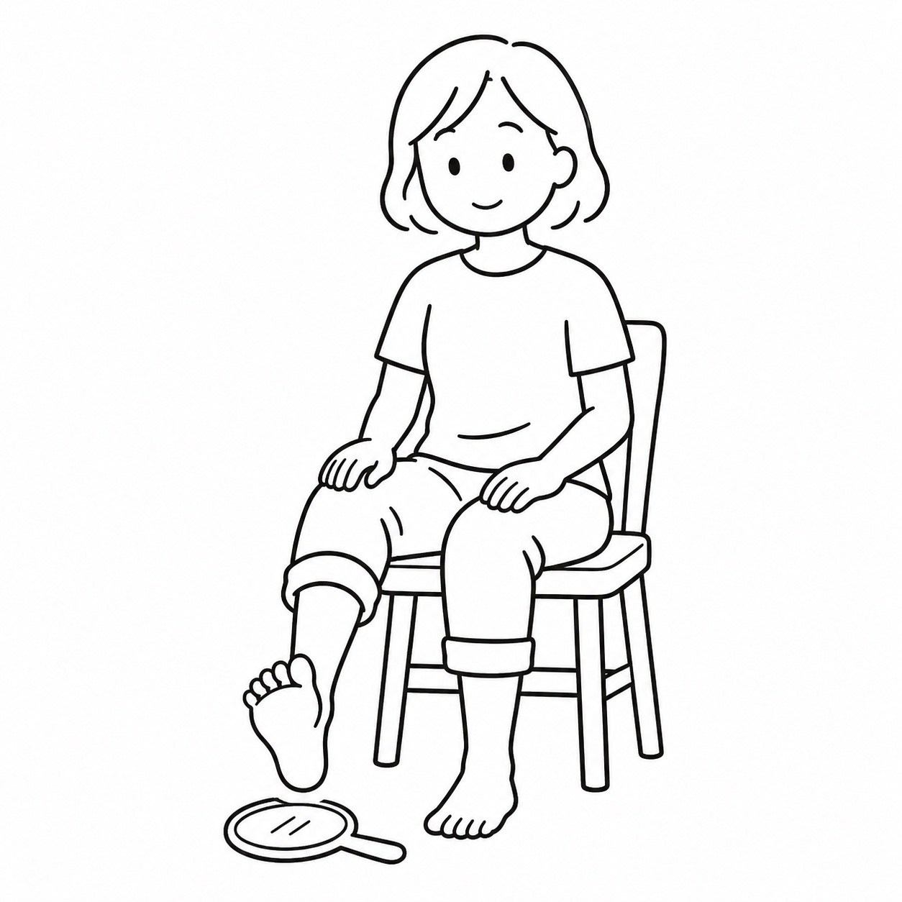

日常で、自分の体を気にかける
足の皮膚・爪・傷を気にかける
靴下を脱ぐときなどに、足の皮膚や爪にも目を向けてみましょう。足の裏や指の間は見落としやすい所です。糖尿病などがある方は、痛みだけを頼りにしないことも大切です。
見方の目安

安定した姿勢で、足を見せる
座るなど安定した姿勢を取り、靴や靴下を脱ぎます。足の甲、かかと、爪に、傷や靴ずれ、ひび割れなどがないか見ます。
足の裏・指の間も見る
足の裏が見づらければ鏡を使う方法もあります。無理に足を持ち上げたり、体をひねったりせず、必要に応じて家族や医療者に手伝ってもらいましょう。
靴・靴下にも目を向ける
靴下に血や液が付いていないか、靴の内側に小石や傷の原因になる物がないか確認します。気づいた傷の場所や変化を、相談時に伝えましょう。
気にかけたい変化
- 傷、水ぶくれ、靴ずれ、ひび割れ
- 赤み、腫れ、熱をもつ部分、膿
- 爪の変形・変色、爪の周りの腫れ
- 足や指の間の皮膚の変化、靴下への血や液の付着
これらの変化があっても、特定の病気とは限りません。自分で病名を決めず、気になることを医療者に伝えましょう。
糖尿病などがある方へ
糖尿病に伴う神経障害があると、傷があっても痛みを感じにくいことがあります。血流の問題があると傷が治りにくくなることもあります。糖尿病情報センターは、糖尿病の方に毎日の足の観察を勧めています。見えにくい・手が届かない場合も含め、主治医やフットケア外来に相談しましょう。
セルフチェックで分かることには限りがあります
見た目だけで、水虫・感染・血流の問題などを見分けることはできません。タコや爪の変化を自分で削ったり切り込んだりして確かめるのではなく、気になる部分は医療者に見てもらいましょう。
このページでは、正常・異常の採点や、病気がないという判定は行いません。
大事なこと3つ
- 足の甲だけでなく、足の裏・指の間・爪も見る。
- 無理な姿勢や、皮膚を傷つける自己処置を避ける。
- 痛みがなくても、傷や赤みなどの変化は相談する。
参考資料
一般的な健康情報です。個別の診断を行うものではありません。更新日：2026年11月26日